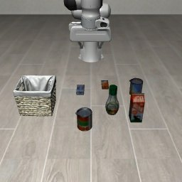
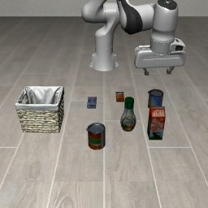
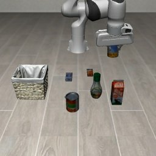
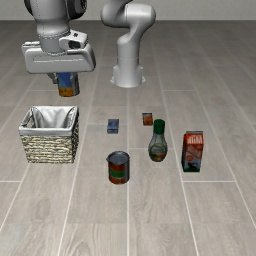
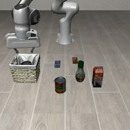

World
Physical scene or simulator
A focused technical path · 4 weeks · 7–10 hours/week
A practical route through robotics foundations, simulation, learning from action data, and modern vision-language-action systems—sequenced for people who want to understand and build, not just collect papers.
01 Foundations before frontier
02 Systems before model names
03 Evidence before claims
The system, at a glance
Think in responsibilities, not rigid boxes. Classical systems keep these layers explicit; end-to-end policies collapse several into one model; most deployed systems are hybrids.
Physical scene or simulator
Cameras, encoders, state estimation
World models, language, planning
Policy, motion plan, controller
Hardware, actuators, contact
A measured π0 experiment
This is the actual alphabet-soup experiment behind the field guide. Follow one expert demonstration into supervised post-training, then watch the policy act autonomously in simulation. Training loss and task success answer different questions.
An expert supplies camera observations, robot state, and the correct seven-dimensional action at every step.
π0 uses flow matching to learn a distribution over 50-step continuous action chunks conditioned on images, state, and language.
The simulator resets to a declared initial state. The model acts from its own observations until success or the 280-step limit.
Training data · episode 813
These are five frames from a real demonstration used in our post-training set. The policy learns from the recorded actions between frames—it does not merely memorize this visual storyboard.
Source: HuggingFaceVLA/libero, episode 813.





Evaluation · no action labels
The only final score is whether the can reaches the basket. We used 20 fixed simulator initial states; these are autonomous rollouts, not replays of demonstration actions. This tests same-task specialization, not generalization to an unseen task.
Paired rollouts
Press play and compare the external-camera view. These three cases explain why the aggregate result was a 16/20 tie.
The curriculum
Each week has a bounded core, a tangible output, and optional depth that stays outside the time budget.
How this path is designed
Every lesson follows a compact learn → inspect → do → produce rhythm.
Robot fundamentals
Build the vocabulary for bodies, frames, observations, actions, policies, controllers, and environments.
Modern Robotics Chapters 2–3: configuration space, frames, and rigid-body motion.
See how geometry, sensing, simulation, planning, and control meet around a robot.
Use CartPole to connect equations of motion, unstable equilibria, and feedback.
Annotate observation → decision → action for CartPole and one robot arm.
Simulation & learning
See how robot software, physics environments, imitation learning, and reinforcement learning fit together.
Learn when robots use topics, services, actions, and recorded message streams.
Distinguish a physics model, task definition, environment API, and rollout.
Compare learning from demonstrations with learning from sampled rewards.
Inspect why diffusion models are useful for multimodal action sequences.
Data & generalist policies
Learn what robot datasets contain and compare generalist policies without losing track of embodiment or evidence.
Open an episode and identify observations, actions, timestamps, tasks, and metadata.
Read architecture figures and evaluation tables rather than every paper line.
Track inputs, action representation, training data, adaptation, and evidence.
Use the awesome list only after writing down the specific question you want to answer.
Systems thinking
Turn architecture literacy into one small falsifiable result with exact revisions and retained evidence.
Map simulation, synthetic data, training, evaluation, and deployment without installing the entire stack.
Identify what belongs to semantic reasoning versus direct action generation.
Inspect revisions, trust boundaries, environment APIs, and what automated checks can actually prove.
Answer one falsifiable question and retain enough raw evidence for another person to inspect.
Curated library
Official courses, documentation, papers, and videos. Filter by the question you are trying to answer.
Try a broader search or choose another track.
Business landscape
A sourced snapshot of US and Indian companies: what they build, who they serve, and the latest financing or valuation we could verify.
Funding and valuation figures are disclosure snapshots, not live estimates. Transaction values, pre-money values, and post-money valuations are labeled separately and should not be compared as if equivalent.
Read the methodology ↗Try a broader search or include both countries.
A practical bias
Learn enough structure to ask better questions. Run small things. Preserve evidence. Let each experiment tell you what to study next.
Return to the beginning ↑